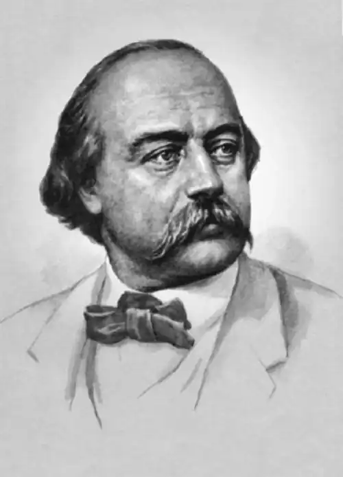

ФЛОБЕР, Ґюстав (Flaubert, Gustave — 12.12.1821, Руан — 08.05.1880, Круассе) — французький письменник.Син лікаря, Флобер увійшов у літературу як творець об'єктивного роману, у якому автор, за його словами, повинен бути подібним до Бога — створити свій світ і піти з нього геть, тобто не нав'язувати читачеві своєї оцінки описаного у творі. Сім'я майбутнього письменника літературою не цікавилася, в його оточенні цінувалися лише суто практичні знання. Можливо, саме тому Флобер приділяв так багато уваги науці і, наче справжній медик, "анатомував" суспільство, змальовуючи його у своїх творах.
У Флобера вражають ранній духовний розвиток і зрілість міркувань про світ. У дванадцять років він обурювався руанськими буржуа, які готувалися зустріти короля у своєму місті: "Які ж дурні люди, яка обмежена юрба! Метушитися навколо короля, тратити 30 тисяч франків на урочини, запрошувати з Парижа 25 тисяч музикантів, клопотатися! Заради кого? Заради якогось короля!.. Ах!!! Які ж люди дурні!" Тоді ж, у шкільні роки, Флобер, як і всі його однолітки, відчував гнітючу тугу і відчай, породжені не лише літературною модою, а й політичним лихоліттям. Він писав про себе дванадцятирічного: "Якби у мене в голові і на кінчику пера не було французької королеви XV століття, то я б відчув цілковиту відразу до життя, і куля давно би визволила мене від дурного жарту, званого життям". Пізніше Флобер писав, що саме в той час двоє його товаришів вкоротили собі віку, не витримавши паскудства, яке зусібіч оточувало їх. Утім, вони також намагалися протестувати, створювали таємні політичні товариства, проте найповніше виражали себе у церкві, де ламали лави і виспівували "Марсельєзу". Хлоп'ячі витівки віддзеркалювали неприйняття світу гендлярства і практицизму. Майбутній письменник мріяв про нову революцію, коли влада перейде до рук народу, співчутливо писав про повсталих ліонських робітників, проте в його душі також розвивався скептицизм, який, врешті, стане наріжним каменем світорозуміння Флобера.
Усе життя і творчість письменника були протестом проти світу буржуа, які, за його влучним визначенням, живуть, "затиснувши серце між власною крамничкою і власним травленням". Погляди Флобера сформувалися в середині 40-х pp. Підґрунтям філософських переконань письменника стали ідеї Б. Спінози: його етика, його пантеїзм виявилися вельми близькими для Флобера, як і думка про причинну залежність всіх явищ одне від одного. Причому, фаталістичний характер цієї залежності, сформульованої Спінозою, засвоїв і Флобер. Фаталізм Флобера — це своєрідний механістичний детермінізм. У свідомості письменника ідеї Спінози про детермінізм поєднуються з думками про відсутність соціального розвитку суспільства, про колоподібний рух історії, які висловив італійський філософ Дж. Віко (1668—1744). Так виникає філософська теорія, яка відкидає буржуазний прогрес і орієнтується на духовні можливості особистості. При цьому презирство до буржуазного суспільства й уряду перетворюється на недовіру та зневагу до будь-якого суспільного руху, через які, власне, Флобер не зрозумів і не сприйняв революції 1848 р. та Паризької комуни, хоча й вважав себе "скептичним і роздратованим республіканцем". Своє ставлення до Другої імперії письменник сформулював цілком однозначно: "...політичний стан країни підтвердив мої давні апріорні погляди про двоногу, безперу тварину, яку я вважаю сумішшю яструба й індички" (індичка для французів — уособлення глупоти). Поєднання індички з яструбом свідчить про те, що письменник аж ніяк не вважав сучасників безневинними істотами. Потворному світові буржуа, де "багатство заміняє все, навіть повагу" ("Лексикон прописних істин"), письменник, здавалося, протиставляв вежу зі слонової кості — поетичний символ романтика А. де Віньї. "Нехай собі Імперія утверджується, — писав Флобер, — зачинимо свої двері, піднімемось на самісінький вершечок нашої вежі зі слонової кості, на горішній майданчик, якомога ближче до неба. Щоправда, там іноді буває холодно. Та чи варто зважати на це? Принаймні там ти бачиш мерехтливі зорі і не чуєш індиків". У Флобера кардинально змінюються уявлення про щастя, які поділяли його попередники. Він пише: "Щастя — ошуканство, а його пошуки є причиною всіх життєвих злигоднів. Але зате існує погідний спокій, який схожий на щастя і навіть ліпший від нього". Але спокій Флобера сповнений надзвичайно активною працею душі, напруженням думки, адже непроминущими є лише духовні вартості. Він цікавився історією, мистецтвом, медициною, археологією, філософією. Прагнення писати лише правду спонукало його досліджувати величезний матеріал. Досить сказати, що лише в процесі роботи над останнім, незакінченим романом "Бувар і Пекюше" Флобер перечитав понад 1500 томів. Складною була і концепція мистецтва, яку запропонував письменник. Звеличуючи Красу як основний принцип Мистецтва (Ф. писав ці слова з великої літери), письменник завжди переймався запитанням: "Навіщо все це?" Відповідь була одна: для пояснення людини і світу. "Художник повинен уміти все зробити піднесеним; він схожий на помпу, що сягає надр речей, до їхнього єства, до найглибших річищ. Він всмоктує і велетенськими снопами викидає до сонця все те, що приховувала земля і чого не було видно". Перед 1850 р. у Флобера з'явилося невідоме раніше відчуття зміни історичних епох. Смерть О. де Бальзака стала для нього завершенням своєрідного етапу, Флобер сприймав його як "сильну людину, яка диявольським чином осягнула свою епоху". Але водночас Флобер дуже ясно розумів, що настав інший час, тому-то "тепер потрібні інші пісеньки". Що ж це за "пісеньки"? Згідно з духом часу, Флобер вважав, що матеріал для мистецтва є "в усьому і скрізь", а заборонених, непоетичних тем більше не існує. Зображаючи світ, треба "дедалі тісніше наближуватися до науки". Наука ж передбачає, з одного боку, неупередженість зображення, а з іншого — глибину дослідження і широту. Саме тому письменник, на думку Флобера, "повинен бути суголосним всьому і всім, якщо він хоче розуміти й описувати". Література, як і наука, повинна стати не дидактичною (дидактизм Флобера вважав недоліком), а наочною. Під наочністю мистецтва Флобер розумів новий принцип відображення світу, який він сам називав об'єктивним. Письменник стверджував: "Треба писати картини, показувати природу такою, якою вона є насправді, але картини вичерпні, у них треба показати і лице, і спід". Прагнення до повноти картини світу, правдивого і всебічного його зображення постійно лунає у висловлюваннях Флобера на різних етапах його творчості, починаючи з роботи над романом "Мадам Боварі", тобто з того часу, коли остаточно сформувався його талант. Принцип безособового, об'єктивного мистецтва породжений не відсутністю авторської позиції, а орієнтацією на читача, який активно сприймає мистецький твір. Про це Флобер писав у листі до Жорж Санд: "...згідно з моїми уявленнями про Мистецтво, художник повинен приховувати свої почуття і виявляти свою присутність у творі такою самою мірою, якою Бог проявляється у природі". Але ця "самоприхованість" є результатом напруженої праці митця, якому треба "добряче помізкувати", "щоб добре писати". Флобер був переконаний у тому, що "...чим більше особистого у нашій творчості, тим вона нікчемніша". Об'єктивна картина у творі Флобера — це не фотографія, а осмислене автором, творчо опрацьоване відтворення світу, що стимулює сприйняття читача. При цьому, відповідно до своїх принципів мистецтва нової епохи, письменник намагався уникати драматичних ефектів і випадковості; він мріяв створити "книгу ні про що, книгу без зовнішніх зв'язків, яка трималась би сама собою, внутрішньою силою свого стилю, наче Земля, яку ніщо не підтримує, тримається у повітрі, — книгу, яка майже не мала б сюжету або принаймні сюжет якої був би майже непомітним". Зміст такої книги, у якій "описуватиметься буденне життя як історія або епопея", на думку автора, можна розкрити за допомогою майстерної композиції та іронії, творених співвідношенням зображених картин. Такі міркування, значною мірою, були реакцією на ту літературну продукцію, що прагнула захопити читача лише карколомним сюжетом. Йдеться, зокрема, про твори Е. Сю, до якого Флобер ставився вельми зневажливо. Флобер — письменник другої половини XIX ст., коли формальні аспекти літератури набували особливого значення. Прагнучи до досконалості стилю, до Краси, Флобер передусім жадав Істини, яка у справжньому мистецтві невіддільна від досконалої форми. Ще у 1846 р. він стверджував, що "нема прекрасних думок без прекрасної форми, і навпаки... Неможливо відібрати в Ідеї форму, адже Ідея існує лише з огляду на форму". Прагнення до досконалості форми у Флобера — це не формалізм, а намагання створити гармонійний твір, який відобразить світ і змусить замислитися не лише над його поверховою сутністю, а й над прихованим, спіднім єством буття. У 1850 р. Флобер почав працювати над новим романом "Мадам Боварі. Провінційні звичаї" ("Madame Bovary. Moeurs de province"), з якого, власне, й починається його творчий шлях, а також над так і не завершеним твором "Лексиконом прописних істин" ("Le Dictionnaire des idees rec Lies"), в якому письменник зібрав плиткі і вульгарні судження, що свідчили про цілковите невігластво сучасного йому буржуа — обивателя. Згодом Флобер використає ці "перли" у багатьох своїх творах. Ось деякі із цих взірців міщанської "мудрості": "Гольфстрем — це знамените місто в Норвегії, нещодавно відкрите"; "Газети — без них не можна обійтись, але потрібно їх лаяти", "Дворянство — зневажати його і заздрити йому"; "Актриси — погуба наших синів"; "Жандарми — опора суспільства"; "Дурень — кожен інакодумець". Сказано у "Лексиконі" й про орден Почесного легіону, який особливо цінувався за часів Наполеона, але в епоху Флобера знецінився: "Орден Почесного легіону — висміювати, але домагатися. Отримавши його, казати, що аж ніяк цього не прагнув". У фіналі роману "Мадам Боварі" нікчемний інтриган і неук, аптекар Оме отримує орден Почесного легіону. Автор ставить на цьому крапку, вважаючи, що читач зможе самостійно прокоментувати цей сюжетний хід, адже факт подано в іронічному контексті. Роман "Мадам Боварі" став новим словом у французькому і європейському мистецтві.